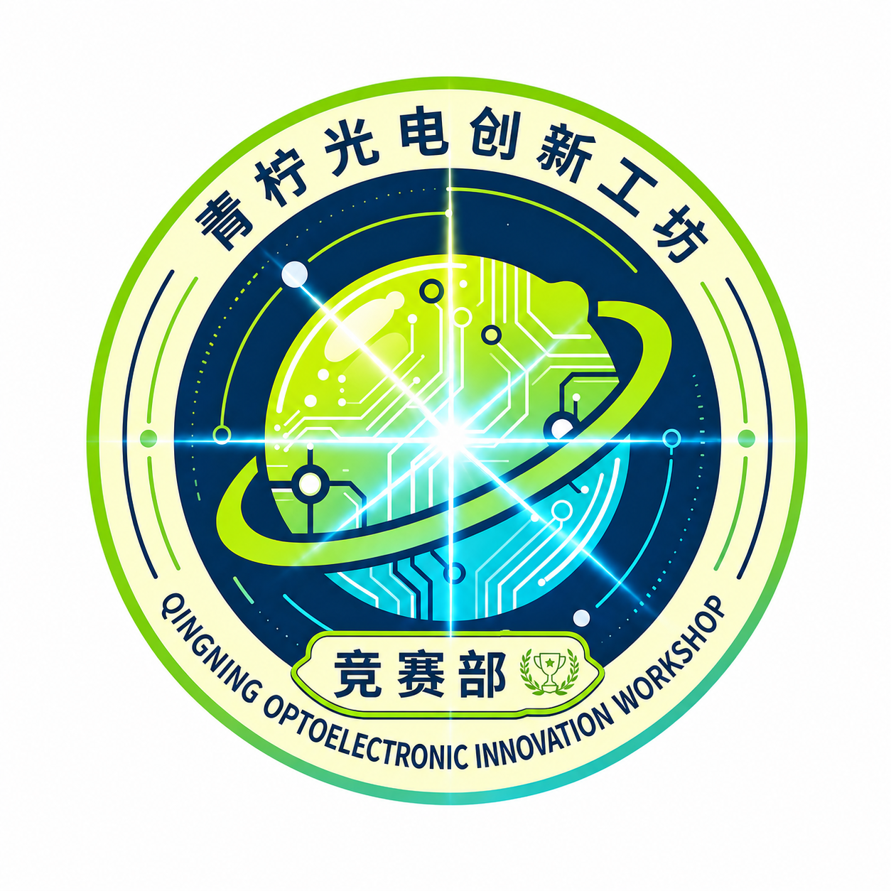
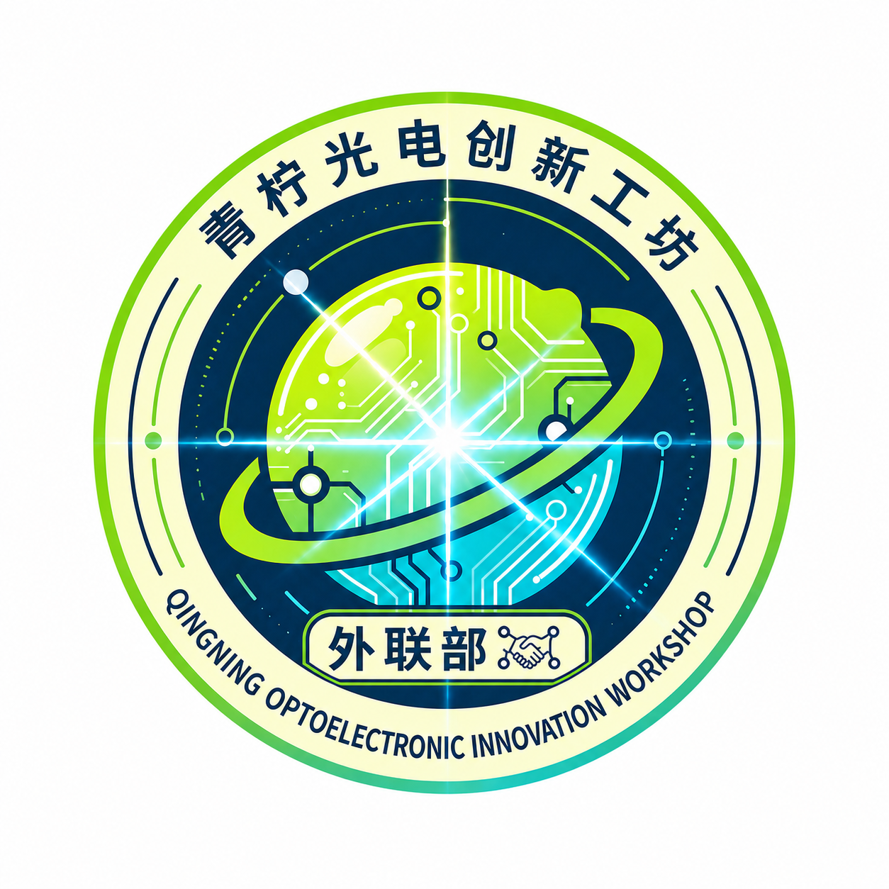
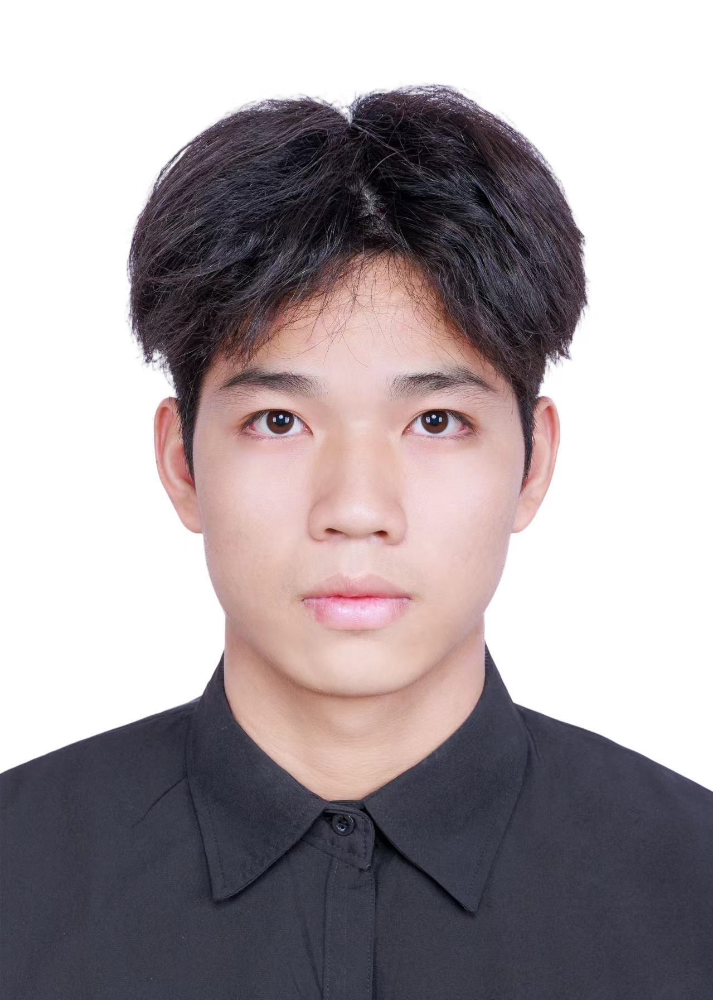
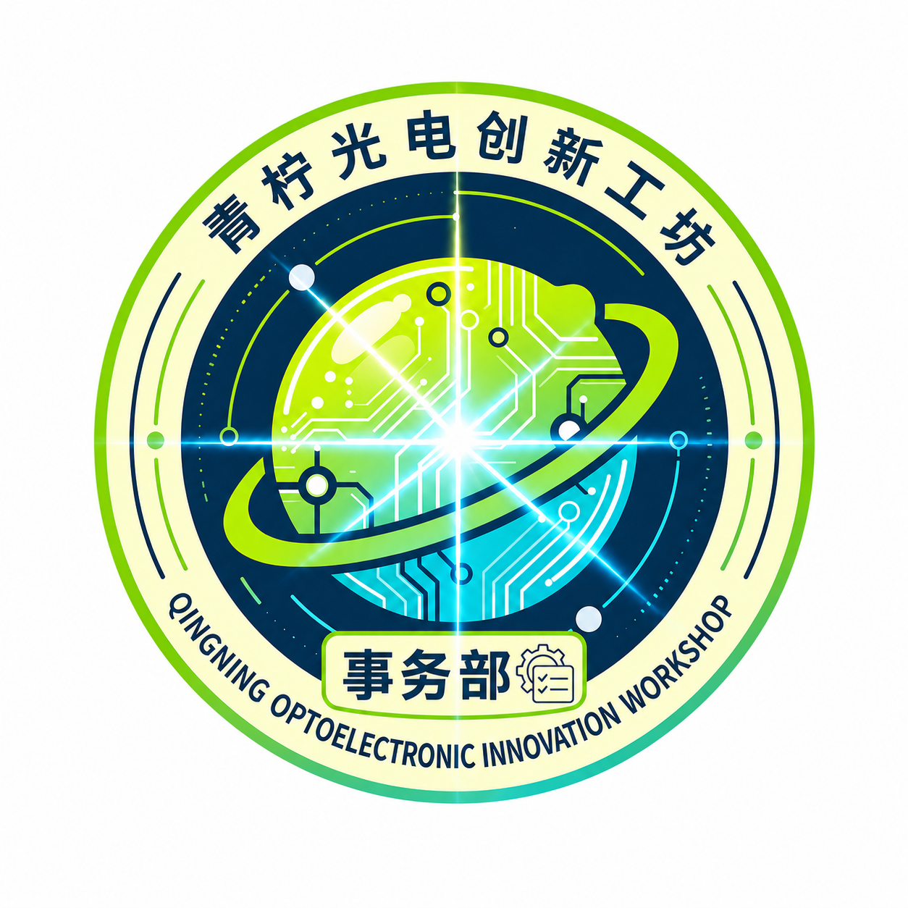
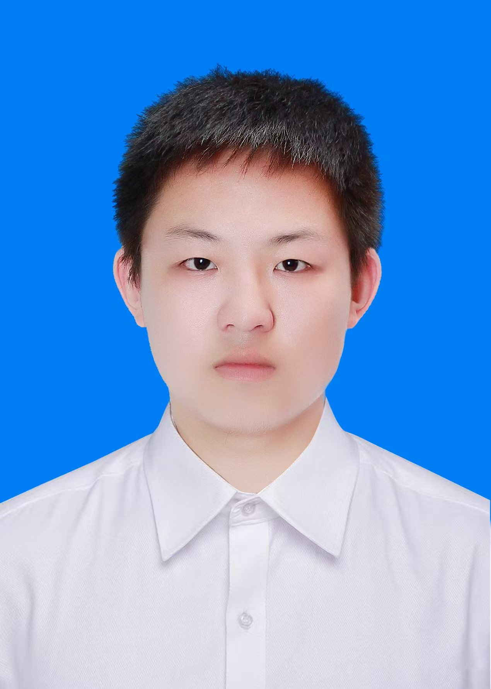
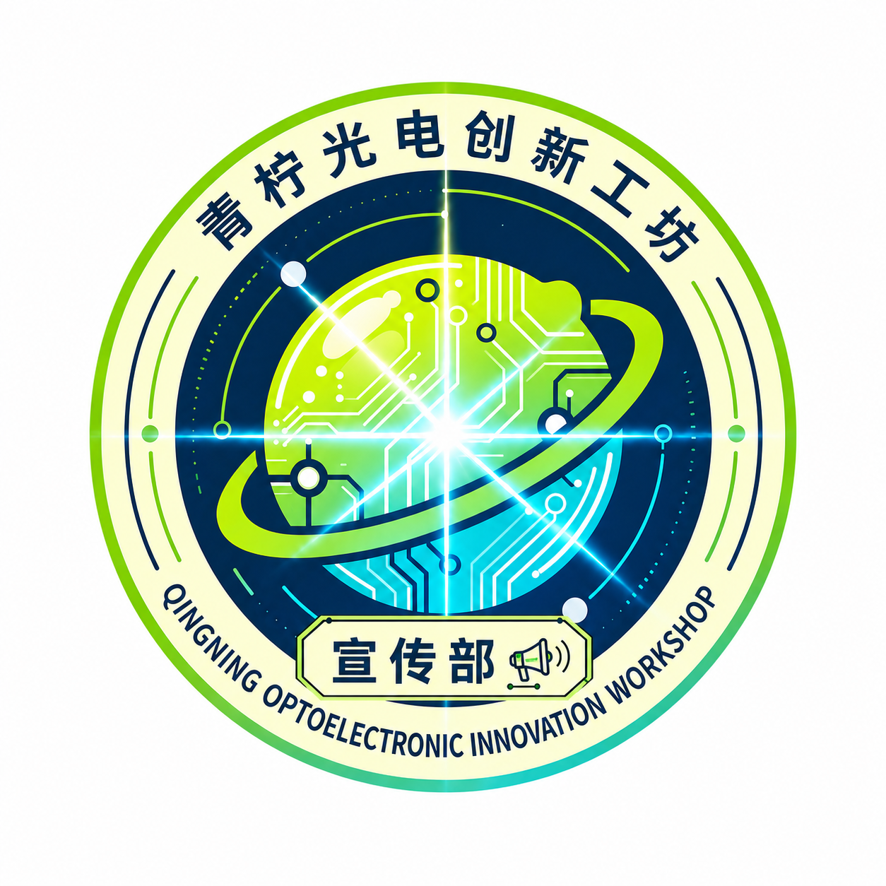

职能部门承担平台运营与服务支撑，保障工坊高效运转；课题执行组聚焦技术攻关，二者协同联动。

深耕科创竞赛的小队，聚焦光电智能感知与具身智能交叉结合主方向，与研究生和指导老师一同征战各类科创赛事，在实操打磨与赛后复盘中锤炼本领。跟踪赛事动态，负责报名组织、赛前培训、跨课题组队与项目统筹。


工坊面向外界的窗口，亦是连接理想与广阔世界的桥梁，负责工坊校外工作与部分校内对接，搭建工坊对外沟通桥梁、拓展交流渠道。


工坊的内部管理与协调中枢，串联各部门的纽带，负责日常事务推进、信息整合、活动举办与内部建设，是保障工坊有序运转的坚实后盾。

工坊对外展示整体风貌、更新活动动态、记录工坊日常的核心窗口——工坊各类美好瞬间的记录者、整理者与传播者。
课题与部门，无需二选一。
加入课题组前需要先通过一个职能部门的纳新，部门工作与课题研究并行推进。我们不要求你面面俱到，而更看重持之以恒的投入——在深耕课题的同时，也可以成为工坊高效运转中不可或缺的力量。